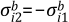
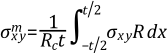
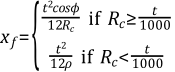

An option is available to allow a separation of stresses through a section into constant (membrane) and linear (bending) stresses. An approach similar to the one used here is reported by Gordon([63]). The stress linearization option (accessed using the PRSECT, PLSECT, or FSSECT commands) uses a path defined by two nodes (with the PPATH command). The section is defined by a path consisting of two end points (nodes N1 and N2) as shown in Figure 17.4: Coordinates of Cross Section (nodes) and 47 intermediate points (automatically determined by linear interpolation in the active display coordinate system (DSYS). Nodes N1 and N2 are normally both presumed to be at free surfaces.
Initially, a path must be defined and the results mapped onto that path as defined above. The logic for most of the remainder of the stress linearization calculation depends on whether the structure is axisymmetric or not, as indicated by the value of ρ (input as RHO on PRSECT, PLSECT, or FSSECT commands). For ρ = 0.0, the structure is not axisymmetric (Cartesian case); and for nonzero values of ρ, the structure is axisymmetric. The explicit definition of ρ, as well as the discussion of the treatment of axisymmetric structures, is discussed later.
Refer to Figure 17.5: Typical Stress Distribution for a graphical representation of stresses. The membrane values of the stress components are computed from:
 | (17–18) |
where:
| = membrane value of stress component i |
| t = thickness of section, as shown in Figure 17.4: Coordinates of Cross Section |
| σi = stress component i along path from results file (`total' stress) |
| xs = coordinate along path, as shown in Figure 17.4: Coordinates of Cross Section |
The subscript i is allowed to vary from 1 to 6, representing σx, σy, σz, σxy, σyz, and σxz, respectively. These stresses are in global Cartesian coordinates. Strictly speaking, the integrals such as the one above are not literally performed; rather it is evaluated by numerical integration:
(17–19) |
where:
| σi,j = total stress component i at point j along path |
The integral notation will continue to be used, for ease of reading.
The “bending” values of the stress components at node N1 are computed from:
(17–20) |
where:
| = bending value of stress component i at node N1 |
The bending values of the stress components at node N2 are simply
 | (17–21) |
where:
| = bending value of the stress component i at node N2 |
The “peak” value of stress at a point is the difference between the total stress and the sum of the membrane and bending stresses. Thus, the peak stress at node N1 is:
(17–22) |
where:
| = peak value of stress component i at node N1 |
| σi1 = value of total stress component i at node N1 |
Similarly, for node N2,
(17–23) |
At the center point (x = 0.0)
(17–24) |
where:
| = peak value of stress component i at center |
| σic = computed (total) value of stress component i at center |
The axisymmetric case is the same, in principle, as the Cartesian
case, except for the fact that there is more material at a greater
radius than at a smaller radius. Thus, the neutral axis is shifted
radially outward a distance xf, as shown in Figure 17.6: Axisymmetric Cross-Section. The axes shown in Figure 17.6: Axisymmetric Cross-Section are Cartesian, i.e., the logic presented here is only valid for
structures axisymmetric in the global cylindrical system. As stated
above, the axisymmetric case is selected if ρ ≠ 0.0. ρ
is defined as the radius of curvature of the midsurface in the X-Y
plane, as shown in Figure 17.7: Geometry Used for Axisymmetric Evaluations. A point on the centerplane
of the torus has its curvatures defined by two radii: ρ and the
radial position Rc. Both of these radii will
be used in the forthcoming development. In the case of an axisymmetric
straight section such as a cylinder, cone, or disk, ρ =
 , so that the input must be a large number
(or -1).
, so that the input must be a large number
(or -1).
Each of the components for the axisymmetric case needs to be treated separately. For this case, the stress components are rotated into section coordinates, so that x stresses are parallel to the path and y stresses are normal to the path.
Starting with the y direction membrane stress, the force over a small sector is:
(17–25) |
where:
| Fy = total force over small sector |
| σy = actual stress in y (meridional) direction |
| R = radius to point being integrated |
| Δθ = angle over a small sector in the hoop direction |
| t = thickness of section (distance between nodes N1 and N2) |
The area over which the force acts is:
(17–26) |
where:
| Ay = area of small sector |
| R1 = radius to node N1 |
| R2 = radius to node N2 |
Thus, the average membrane stress is:
(17–27) |
where:
| = y membrane stress |
To process the bending stresses, the distance from the center surface to the neutral surface is needed. This distance is shown in Figure 17.6: Axisymmetric Cross-Section and is:
 | (17–28) |
The derivation of Equation 17–28 is the same as for yf given at the end of SHELL61 - Axisymmetric-Harmonic Structural Shell. Thus, the bending moment may be given by:
(17–29) |
or
(17–30) |
The moment of inertia is:
(17–31) |
The bending stresses are:
(17–32) |
where:
| c = distance from the neutral axis to the extreme fiber |
Combining the above three equations,
(17–33) |
or
(17–34) |
where:
| = y bending stress at node N1 |
Also,
(17–35) |
or
(17–36) |
where:
| = y bending stress at node N2 |
σx represents the stress in the direction of the thickness. Thus, σx1 and σx2 are the negative of the pressure (if any) at the free surface at nodes N1 and N2, respectively. A membrane stress is computed as:
(17–37) |
where:
| = the x membrane stress |
The treatment of the thickness-direction "bending" stresses is controlled by KB (input as KBR on PRSECT, PLSECT, or FSSECT commands). When the thickness-direction bending stresses are to be ignored (KB = 1), bending stresses are equated to zero:
(17–38) |
 | (17–39) |
When the bending stresses are to be included (KB = 0), bending stresses are computed as:
(17–40) |
(17–41) |
where:
| = x bending stress at node N1 |
| σx1 = total x stress at node N1 |
| = x bending stress at node N2 |
| σx2 = total x stress at node N2 |
and when KB = 2, membrane and bending stresses are computed using Equation 17–27, Equation 17–34, and Equation 17–36 substituting σx for σy.
The hoop stresses are processed next.
(17–42) |
where:
| = hoop membrane stress |
| Fh = total force over small sector |
| Δφ = angle over small sector in the meridional (y) direction |
| σh = hoop stress |
| Ah = area of small sector in the x-y plane |
| r = radius of curvature of the midsurface of the section (input as RHO) |
| x = coordinate thru cross-section |
| t = thickness of cross-section |
Equation 17–42 can be reduced to:
(17–43) |
Using logic analogous to that needed to derive Equation 17–34 and Equation 17–36, the hoop bending stresses are computed by:
 | (17–44) |
and
(17–45) |
where:
 | (17–46) |
for hoop-related calculations of Equation 17–44 and Equation 17–45.
An xy membrane shear stress is computed as:
 | (17–47) |
where:
| = xy membrane shear stress |
| σxy = xy shear stress |
Since the shear stress distribution is assumed to be parabolic and equal to zero at the ends, the xy bending shear stress is set to 0.0. The other two shear stresses (σxz, σyz) are assumed to be zero if KB = 0 or 1. If KB = 2, the shear membrane and bending stresses are computing using Equation 17–27, Equation 17–34, and Equation 17–36 substituting σxy for σy
All peak stresses are computed from
(17–48) |
where:
| σi P = peak value of stress component i |
| σi = total value of stress of component i |
(Specializations for Centerline)
At this point it is important to mention one exceptional configuration related to the y-direction membrane and bending stress calculations above. For paths defined on the centerline (X = 0), Rc = 0 and cosΦ = 0, and therefore Equation 17–27, Equation 17–28, Equation 17–34, and Equation 17–36 are undefined. Since centerline paths are also vertical (φ = 90°), it follows that R = Rc, and Rc is directly cancelled from stress Equation 17–27, Equation 17–34, and Equation 17–35. However, xf remains undefined. Figure 17.8: Centerline Sections shows a centerline path from N1 to N2 in which the inside and outside wall surfaces form perpendicular intersections with the centerline.
For this configuration it is evident that cos φ = Rc/ρ as φ approaches 90° (or as approaches N1 - N2). Thus for any paths very near or exactly on the centerline, Equation 17–28 is generalized to be:
 | (17–49) |
The second option of Equation 17–49 applied to centerline paths is an accurate representation for spherical/elliptical heads and flat plates. It is incorrect for axisymmetric shapes that do not form perpendicular intersections with the centerline (e.g., conical heads). For such shapes (as shown in Figure 17.9: Non-Perpendicular Intersections) centerline paths must not be selected.